Projetos em destaque
Visualização sem WebGL.

CONSTRUINDO O AMBIENTECONSTRUA O EXTRAORDINÁRIO
Deimox.
Desenvolvimento de jogos no Roblox
com foco em sistemas, VFX e experiências imersivas.
01 / 03
PROJETOS EM DESTAQUE
PROJETO
O vídeo original não está incluído neste pacote.
0:000:00
OLÁ, EU SOU
Deimox.
Game Dev Full Stack
Penso no jogo como um fluxo completo: da ideia e do game design à produção e execução. Já me aprofundei em programação, VFX, animação, mapas, UI e música. Neste portfólio, mostro especialmente sistemas em Luau que criam efeitos visuais e experiências para Roblox, além de experimentos como o VoxelMine, com geração procedural e terreno por chunks.
YOUTUBE@ItsDeimox↗PORTFÓLIOGAME DEVdeimox.vercel.app↗